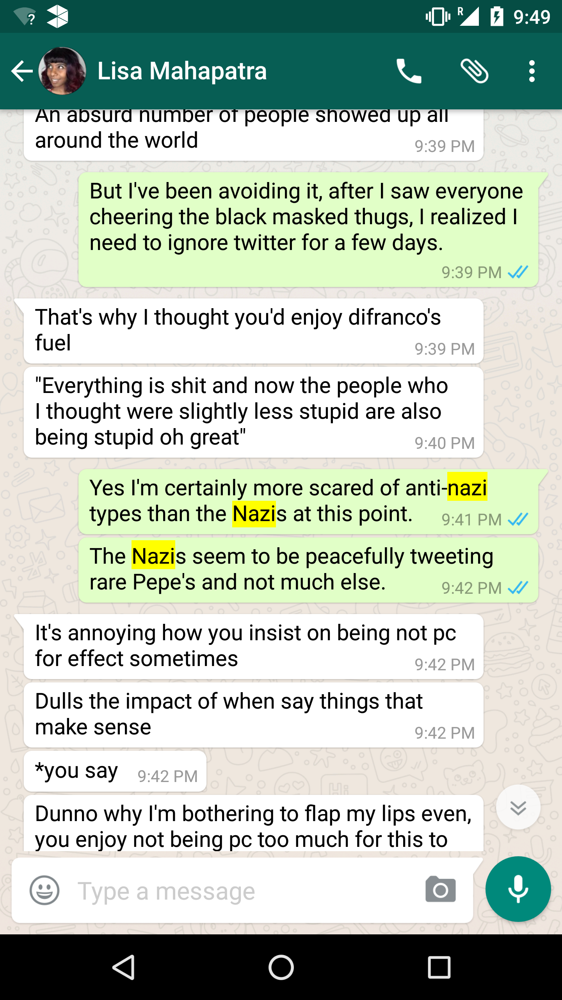
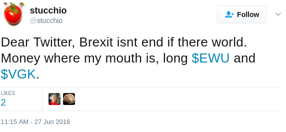
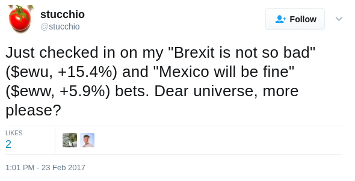
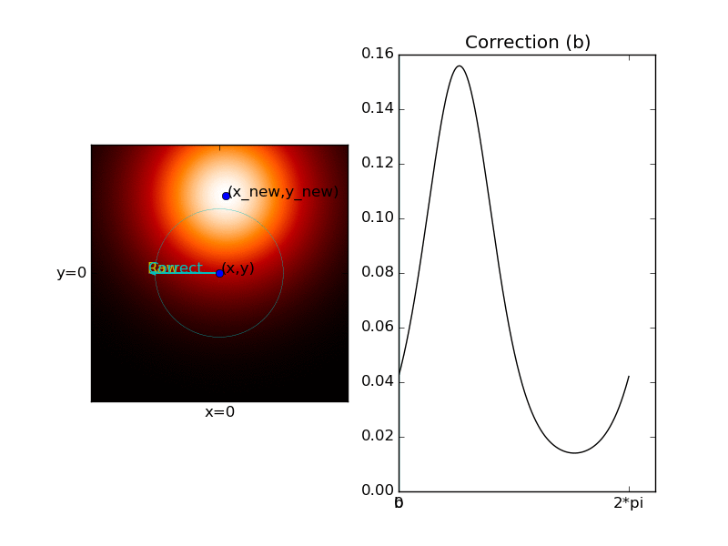

name: title class: center, middle, inverse # How to Change your Opinion ## With Python and Bayes Rule Chris Stucchio, [Wingify](http://www.wingify.com) --- class: center, middle, inverse # "When my information changes, I change my conclusions. What do you do, sir?" ## Paul Samuelson --- class: middle # Numpy Arrays - redux ``` x = array([1,2,3]) y = array([3,5,7]) assert(x + y == array([4,7,10])) assert(x * y == array([3,10,21])) ``` *Ufuncs* are applied elementwise: ``` assert( np.log(array([1,2,3])) == array([np.log(1), np.log(2), np.log(3)])) ``` The expression `result[[1,3,5]] = 7` is equivalent to `result[1] = 7`, `result[3] = 7` and `result[5] = 7`. --- class: middle # Underlying reality Describe different world states with integers `i=0,...,N-1`: - `i=0` means "that guy in the first row doesn't have AIDS" - `i=1` means "that guy in the first row does have AIDS" What we'll be doing, going forward, is manipulating python arrays. If `opinion[0]` is large compared to `opinion[1]`, it means we believe it is significantly more likely that this guy doesn't have AIDS (and vice versa). ## Reality is uncertain I don't actually know whether that guy in the front row actually has AIDS or not. --- class: middle # Multiplicative weights algorithm Create an array of weights, with each array element representing a possible "world state". ```python weight = np.ones(shape=(number_of_world_states,)) / number_of_world_states # weight = array([ 1./number_of_world_states, 1.0 / number_of_world_States, ...]) ``` --- class: middle # Multiplicative weights algorithm ```python for e in evidence: weight = update(e) * weight ``` Here `update(e)` is a function which maps the evidence to an array: - If world state `i` is consistent with the evidence, then `update(e)[i]` is larger than 1. - If world state `i` is inconsistent with the evidence, then `update(e)[i]` is smaller than 1. --- class: middle # Multiplicative weights algorithm Problem: there are 10 people, and we know one of them is a terrorist! How can we find which one? - `i = 0` means "Steve is the terrorist". - `i = 1` means "Varsha is the terrorist". - `i = 2` means "Jatin is the terrorist". - ... - `i = 9` means "Sandeep is the terrorist". --- class: middle # Multiplicative weights algorithm Evidence: A bomb has gone off in Pune, but only `i=0,1,2,5,7` were in Pune at the time. In this case, `evidence` is an array representing the terrorists present. ``` def update(terrorists_present): result = np.full(10, 0.1) result[terrorists_present] = 2.0 return result In [43]: update([0,1,2,5,7]) Out[43]: array([ 2., 2., 2., 0.1, 0.1, 2., 0.1, 2., 0.1, 0.1]) ``` --- class: middle # Multiplicative weights algorithm Evidence: A bomb has gone off in Pune, but only `i=0,1,2,5,7` were in Pune at the time. ``` weight = update([0,1,2,5,7]) * weight # weight is now array([ 0.2, 0.2, 0.2, 0.01, 0.01, 0.2, 0.01, 0.2, 0.01, 0.01]) ``` --- class: middle # Multiplicative weights algorithm Gather more evidence: ``` city | people present ---------+--------------- Pune | 0,1,2,5,7 Nagpur | 0,2,5,8,7 Nashik | 1,2,6,9 Mumbai | 2,3,7,8,9 Kholapur | 0,2,5,9 Parbhani | 1,2,6,8 ``` --- class: middle # Multiplicative weights algorithm Gather more evidence: ```python data = """Pune | 0,1,2,5,7 Nagpur | 0,2,5,8,7 Nashik | 1,2,6,9 Mumbai | 2,3,7,8,9 Kholapur | 0,2,5,9 Parbhani | 1,2,6,8""" evidence = [ [int(i) for i in d.split('|')[1].split(",")] for d in data.splitlines()] for e in evidence: weight = weight * update(e) # array([ 0.0008 , 0.0008 , 6.4, # 0.000002, 0.0000001, 0.0008, # 0.00004 , 0.0008 , 0.0008, # 0.0008 ]) ``` Terrorist is probably Jatin! --- class: middle # Multiplicative weights algorithm Here's what happened. For Jatin - present at every terrorist attack - we multiplied `weights[2]` by `2`, 6 times (or 64). If someone was present at fewer attacks - say only 3 of them - we multiplied their weight by a much smaller number (say 0.008 for 3 cities). Net result: Jatin's weight goes up, everyone else's weight goes down. --- class: middle # Multiplicative weights algorithm ## Questions The numbers 2 and 0.1 were entirely made up. Why not use 5 and 0.001, or 2 and 1/2? Will the algorithm converge faster or slower if we chose different weights? We are somewhat confident Jatin is a terrorist, but how confident? How much more confident would we be if is weight were 5, 10 or 20? --- class: middle # Bayesian statistics answers these questions --- class: middle  --- class: middle # Probability is an *opinion* about reality In Python we represent opinions as arrays: ```python import numpy as np opinion = np.array([0.97, 0.03]) ``` This represents a 97% chance that "that guy in the first row doesn't have AIDS" and a 3% chance he does. Probability represents long run break-even betting odds - i.e., if you make a large number of 97%-3% bets at 97:3 gambling odds, you will expect to break even. If the world offers better odds, *bet against them*. --- class: middle # Laws of probability Probability must obey two important laws: ``` assert(all(opinion) >= 0) ``` ``` assert(sum(opinion) == 1) ``` --- class: middle # Bayes rule ## How to change your opinion ``` P(evidence|world state) P(world state) P(world state|evidence) = -------------------------------------- P(evidence) ``` Bayes rule is the mathematically optimal method for changing your opinion. --- class: middle # Bayesian update algorithm ``` prior = ...pull a prior from your posterior... posterior = prior for e in evidence: posterior *= likelihood(e) posterior /= sum(posterior) ``` --- class: middle # Did Richard Spencer ever hurt anyone? ## A twitter Favorite <img src="spencer.gif" style="height:300px"></img> --- class: middle <table> <tr><td> # Did Richard Spencer ever hurt anyone? ## Put your money where your mouth is Lisa argued that maybe Spencer deserved to get punched, maybe he beat up some people or set their house on fire, or something like that. At the time of this conversation I'm in Bombay airport, and know nothing other than what I saw on twitter. **A gamble: if Spencer is a harmless internet troll, Lisa owes me dinner. Otherwise I owe her dinner.** </td><td></td><td> </img> </td></tr> </table> --- class: middle # Did Richart Spencer ever hurt anyone? Lets use Bayesian statistics. - `i=0` means "he never hurt anyone" - `i=1` means "he did hurt someone" Assume as a prior that 50% of Nazis actually hurt people. ``` prior = array([0.5, 0.5]) ``` --- class: middle # Did Richart Spencer ever hurt anyone? I suspect that if he were some scary violent terrorist, reporters probably wouldn't be so politely interviewing him while he wears a sweater vest. I'm 60% confident of this. ``` likelihood = array([0.60, 0.40]) posterior = likelihood * prior posterior /= sum(posterior) # Posterior = [0.6, 0.4] ``` --- class: middle # Did Richart Spencer ever hurt anyone? Assume Spencer actually hurt someone. I'll assume there are 80% odds twitter would be talking about the bad thing he did. And if he never did hurt someone, I'll assume there is a 20% chance twitter will make stuff up anyway. **No one on twitter says he ever hurt anyone.** ``` likelihood = array([0.8, 0.2]) posterior = likelihood * prior posterior /= sum(posterior) # Posterior = [ 0.85714286, 0.14285714] ``` Net gain (at 1:1 odds): (1 dinner) x 0.857 - (1 dinners) x 0.143 = 0.714 dinners. **I'll take this bet.** Net gain (at 4:1 odds): (1 dinner) x 0.857 - (4 dinners) x 0.143 = 0.285 dinners. **I'd even take this bet at 4:1 odds.** --- class: middle <table> <tr><td> # Did Richard Spencer ever hurt anyone? </td><td></td><td> </img> </td></tr> </table> --- class: middle # Bayesian probability helps you make effective gambles </img> </img> As of 17/3/2017, $EWW is +12.5%. Probability helps you balance your risks to your payoffs. --- class: middle # Disease prediction Suppose I give random guy in the first row an HIV test. It comes up positive. What is the probability he has HIV? Prior opinion: ```P(world state)``` After a little bit of googling, I've discovered that the probability of a random adult (in the US) having HIV is 0.006. So: ``` prior = array([0.994, 0.006]) ``` This is what we believe before seeing any evidence. (Example follows [this blog post](https://www.chrisstucchio.com/blog/2016/why_gays_cant_donate_blood.html) where all sources are cited.) --- class: middle # Disease prediction The evidence, in this case, is a positive test. We want to figure out `P(evidence|world state)`. According to [wikipedia](https://en.wikipedia.org/wiki/Diagnosis_of_HIV/AIDS#Accuracy_of_HIV_testing), the common American HIV test has: - A 99.7% chance of reporting that an infected person is, in fact, infected. - A 1.5% chance of reporting that an *uninfected* person is infected. This means that: ``` likelihood = array([0.015, 0.997]) ``` --- class: middle # Disease prediction The last term, `P(evidence)` is a scalar constant rather than an array. It's **hard to compute**, but we don't actually need to do that. Instead, we can use the laws of probability. ``` posterior = likelihood * prior # posterior is array([ 0.01491 , 0.005982]) # sum(posterior) is 0.020892000000000001 ``` According to the laws of probability, the sum must be 1.0, not any other number. So we can fix this: ``` posterior = posterior / sum(posterior) # now posterior is array([ 0.7136703, 0.2863297]) ``` The odds that the guy in the front row has aids are only 28.6%! --- class: middle # Priors matter Our choice of prior - in this case `prior = array([0.994, 0.006])` matters significantly. Here are some alternate choices: - Front row guy is straight. Then `prior = array([0.998, 0.002])` - Front row guy is gay. Then `prior = array([0.64, 0.36])` Running the same calculation yields: - Front row guy is straight. Posterior (after positive HIV test) yields an 11.8% chance he has HIV. - Front row guy is gay. Posterior (after positive HIV test) yields a 97.4% chance he has HIV. **Exercise:** Suppose the test comes up negative. Repeat the calculation for this case. --- class: middle, center, inverse <table> <tr><td> # Hidden state ## And what it tells us about reality </td><td></td><td> <img src="compass_calibration.gif" style="height:300px"></img> </td> </tr> </table> --- class: middle, center, inverse <table> <tr><td> # Hidden state </td><td></td><td> </img> </td> </tr> </table> --- class: middle # Hidden state ### Things we want to know - My true `(x,y)` coordinates - My direction `t` ### Things we actually know - GPS measurement `(x_gps, y_gps)` of location - **noisy** - Compass measurement `c` - **systematically wrong** --- class: middle # Hidden state ## In a perfect world Imagine the world were deterministic, and GPS measurement was perfect. ``` true_angle = arctan( (new_y - old_y) / (new_x - old_x) ) bias = measured_angle - true_angle ``` Easy! --- class: middle # Hidden state ## Building a model **Assumption:** Compass measurement of direction is off by constant factor: `c = t + b`, where `b` is the angle by which my compass is biased. In the screenshots I shared, `b` is about 90 degrees to the left. The variable `b` **is an unknown quantity** **Assumption:** Constant walking speed `s`, and I'm pointing the phone in the direction I'm walking. This means that if my position is `(x,y)`, then my new position will be: ``` x_new = x + s*cos(t) y_new = y + s*sin(t) ``` --- class: middle # Hidden state ## Building a model Since `b` is unknown, we will model it with Bayesian statistics and form an opinion about it. Let `i=0,...,359` correspond to the world state `b = i * 2 * pi / 360`. To begin with, we will assume all possible values of `b` are equally likely. So as a prior we take: ``` prior = np.full(360, 1.0/360.0) ``` --- class: middle # Hidden state ## Building a model Furthermore, let us assume that noise in the GPS is independent of time and normally distributed. (This is a technical assumption, don't worry about this detail.) Therefore, we assume the following as a *generative model*: ``` from scipy.stats import norm gps_error_dist = norm(0,2*sigma) x_gps = x + gps_error_dist.rvs() y_gps = y + gps_error_dist.rvs() ``` This means we are assuming the implementation of the real world looks something like this code. --- class: middle # Hidden state ## Computing likelihood We became convinced our compass was wrong when our GPS location moved north, but the compass direction pointed west. So it seems that the *difference* between two GPS locations is important. ``` x_new_gps = x_new + gps_error_dist.rvs() = x + s*cos(t) + gps_error_dist.rvs() y_new_gps = y_new + gps_error_dist.rvs() = y + s*cos(t) + gps_error_dist.rvs() ``` --- class: middle # Hidden state ## Computing likelihood Now lets look at the differenc ebetween two GPS locations: ``` x_new_gps - x_gps = (x + s*cos(t) + gps_error_dist.rvs()) - (x + gps_error_dist.rvs()) = s*cos(t) + gps_error_dist.rvs() - gps_error_dist.rvs() y_new_gps - y_gps = (y + s*sin(t) + gps_error_dist.rvs()) - (y + gps_error_dist.rvs()) = s*sin(t) + gps_error_dist.rvs() - gps_error_dist.rvs() ``` For simplicity, lets also define: ``` def double_gps_error(): return gps_error_dist.rvs() - gps_error_dist.rvs() ``` --- class: middle # Hidden state ## Computing likelihood Now recall that our *measured* direction `c = t + b`. So therefore, `t = c - b`. ``` x_new_gps - x_gps - s*cos(c - b) = double_gps_error() y_new_gps - y_gps - s*sin(c - b) = double_gps_error() ``` Now we have an expression which is all *observable quantities* - i.e. evidence - on the left side, and a random variable on the right side. This allows us to compute the likelihood, i.e. `P(evidence | world state)`. --- class: middle # Hidden state ## Computing likelihood ``` double_gps_error_dist = scipy.stats.norm(0, 2*gps_variance) # A scipy distribution object representing the error # in GPS location def likelihood(x_new_gps, x_gps, y_new_gps, y_gps, c, b): return double_gps_error_dist.pdf((x_new_gps-x_gps) - s*cos(c-b)) * double_gps_error_dist.pdf((y_new_gps-y_gps) - s*sin(c-b)) ``` --- class: middle # Hidden state </img> --- class: middle # Hidden state ## Updating our beliefs ``` b_grid = np.arange(0,2*pi, 2*pi/1024) # array([ 0*2*pi/1024, 1*2*pi/1024, 2*2*pi/1024, ..., # 1021*2*pi/1024, 1022*2*pi/1024, 1023*2*pi/1024]) posterior = likelihood(x_new_gps, x_gps, y_new_gps, y_gps, c, b_grid) * prior posterior /= sum(posterior) ``` In one step, this does not always get us a conclusive result. --- class: middle # Hidden state <img src="bayesian_update.gif" style="height:500px"></img> --- class: inverse # Bayesian Statistics ## The Right Way to Change Your Opinion - Simple update rule - just multiplication algorithm - Systematic way to solve problems - Yields optimal answer - Makes you think better  We're hiring all kinds of people (not just data science). With high probability we have an open position for you. Email [chris@wingify.com](mailto:chris@wingify.com) or [careers@wingify.com](mailto:careers@wingify.com)